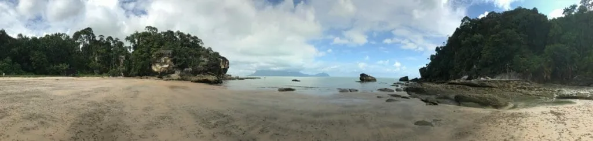

Op 8 april vliegen we wederom naar Jakarta en stappen meteen over op een vlucht naar Pontianak op Kalimantan (het Indonesische gedeelte van Borneo) Recentelijk zijn we te weten gekomen dat de vader van Tim hier gewoond heeft toen hij een klein jongetje was, dit als leuk klein weetje. Wij gebruiken Pontianak eigenlijk alleen als doorreis-hub naar Maleisisch borneo en gaan na een nacht slapen dan ook vroeg op pad om bij onze geboekte bus te komen op het busstation 20 km buiten de stad. Onze bus vertrekt om 07:00 uur en op aanraden van ons hotel vertrekken we om 05:30 (We moesten rekening houden met de drukke ochtend spits) met de taxi, en nog geen 20 minuten later staan we op een verlaten busstation in the middle of nowhere, we zijn wat aan de vroege kant concluderen we al snel.
We ontbijten en rond 06:30 blijkt er wat leven op het busstation te komen. De loketten worden langzaam aan bemand en even later gaat het licht dan ook aan van de door ons geboekte busmaatschappij. De mijnheer achter het loket kan er niet bij dat we via internet geboekt hebben (zo begrijpen we, hij spreek alleen Indonesisch) en is van mening dat we nog moeten betalen. In ons beste handen-en-voeten-werk krijgen we hem er van overtuigd dat het echt zo is en dat we echt niet nog een keer 500.000 rupiah gaan betalen! Er wordt wat heen en weer gebeld en middels een gevonden amateur-tolk begrijpen we dat we mogen doorlopen naar het vertrek platform. Waar we inmiddels al niet meer van opkijken is er geen bus om 07:00 uur. Pas tegen 07:30 komt er dan toch een bus en kunnen we even later beginnen aan onze 9 uur durende rit naar Kuching (Maleisië).
De rit naar Kuching is werkelijk prachtig! Onze eerste indrukken van het regenwoud van Borneo doen we hier op, maar zeerzeker ook het (voornamelijk) primitieve leven wat de mensen hebben. Er loopt eigenlijk maar één hoofdweg langs de kust van het eiland, helemaal rondom. Langs deze weg bouwt iedereen zijn houten huisje. Vaak is het een niet meer dan vier buitenmuren met een dak. We kijken onze ogen uit naar al het schoons van natuur en ook hoe gelukkig je kan zijn met zo weinig middelen.
Kuching
Kuching staat bekend om het National Park wat er in de buurt ligt, en er is een Wildlife Center welke oerang utans opvangt die verstoten zijn of wees. De oeraug utans leven gewoon in het regenwoud, maar worden om de zoveel tijd met een lokroep aangehaald om ze bij te voederen als ze daar behoefte aan hebben. Op deze manier leven de apen volledig in de natuur, maar kan er ook een oogje in het zeil worden gehouden.
Onze eerste stop is het Wildlife Center. Het centrum ligt zo’n uur buiten Kuching. We maken gretig gebruik van Uber in Maleisië en dus ook in Kuching. Tot ons verbazing accepteert een uber-chauffeur onze aanvraag en al rijdende komt deze dame er een beetje schrikachtig achter dat ze en rit heeft geaccepteerd van zo’n grote afstand. Er wordt wat druk gebeld met (wij denken) mede uber-chauffeurs en uiteindelijk komen we snel (en erg voordelig) op onze bestemming aan.
Vanaf de ingang is het nog zo’n 20 minuten door het regenwoud lopen. Op het moment dat we aankomen bij zien we dat er een enorme oerang utan net gevoederd wordt met een enorme berg bananen, hardgekookte eieren en een kokosnoot toe. In ons vooronderzoek hadden we over dit mannetje al gelezen; het is Ricky. Ricky is een erg humeurig dominant mannetje die de leider van de groep is. Hij wil altijd op hetzelfde tijdstip te eten krijgen om hem niet kwaad te krijgen. Die hebben we alvast in de pocket – het is namelijk niet gegarandeerd dat de oerang utans op het voederen af komen elke keer. Dit is afhankelijk van het weer, maar ook de beschikbaarheid van voedsel in het regenwoud is hier een factor in.
Helaas begint het bijna daarna meteen te al een gek te regenen en zien we de hoop om de rest van de oerang utan te kunnen zien langzaam maar zeker verder wegzakken.
In de zeikende regen staan we met nog een klein beetje hoop op de uitkijk naar nog meer van deze mooie beestjes. Even later komen er 2 verzorgers uit de jungle met — ja hoor — daarachteraan een oerang utan.
Op dit specifieke moment realiseren we dat soms alleen met je iPhone fotograferen geen uitkomst is, en hele duidelijke foto’s maken we niet van deze schattige wezentjes. Dat we ze in het echt hebben mogen zien is een bijzondere ervaring, en het zijn prachtige dieren!
Kuching betekend letterlijk ‘kat’, de stad maakt hier gretig gebruik van. Op verschillende straathoeken staan standbeelden van katten en er is een heus kattenmuseum. Op een verveeld moment nemen we hier een kijkje – het is dat het gratis is – en komen snel tot de conclusie dat het een uit de hand gelopen verzameling is, en we zijn er met een 20 min ook weer weg. Op het moment dat wij uit het museum stappen, stapt er iemand voor ons uit een Uber-auto. We communiceren met de Uber-driver dat we graag met hem meerijden. De driver blijkt een fantastische kerel die het ‘Uberen’ doet voor zijn plezier en om mensen te ontmoeten. We hebben het super gezellig en we spreken meteen met hem af om ons de volgende dag naar het National Park te laten rijden!
Het is een man van zijn woord en trouw staat hij in de vroege morgen voor ons hostel klaar om ons op te halen. Het is een aardig stuk rijden naar het Park, maar hoe vroeg het ook is, we hebben weer een leuk gesprek met onze vriendelijke held! We arriveren rond 07:30 bij de jetty toegangspoort van Bako National Park. Hier neem je de boot om bij het Park zelf te komen.

Het park staat bekend om zijn proboscis Monkey (de neusaap, maar ook wel Dutch Monkey genoemd vanwege zijn grote neus!) en er zijn dan ook een aantal hikes die je kan doen in het park, met eentje waar je grote kans hebt om ze te zien. Deze besluiten we te doen en maken een prachtige tour door de Bornoeaanse jungle, maar helaas voor ons géén neusaap. We doen nog een andere hike, waar we uiteindelijk niet echt goed uitkomen qua tijd en lopen terug naar het centrale punt om te vertrekken. Om 15:00 uur gaat de laatste (?!!) set boten terug naar de hoofdingang. We willen niet tot het laatste moment wachten en reserveren voor de zekerheid de boot van 14:00 uur. We hebben nog wat tijd te doden, en zien een groepje mensen even verderop rond een tak staan. Zou het dan toch? Het is echter geen aap zoals wij hoopten, maar een groene gifslang. Er hangt wel röhring in de lucht zoals we merken en verder staan weer wat mensen te staren, dit keer naar boven! We staren mee en in de verre verte in de boomtoppen worden we dan toch getrakteerd op een prachtige neusaap. De rust die hij heeft en hoe hij gemakkelijk en sierlijk van plek naar plek springt is prachtig! We zien er uiteindelijk 3 in totaal, ook zien we nog een familie zilver-apen. Als kers op de taart lopen we naar onze boot en zien op het strand nog een prachtig zwijn (dezelfde soort als Pumba uit de Lion King!) te staan vroeten in het natte zand.
Onze driver staat wederom gereed op het moment dat wij bij de jetty weer aankomen, en hebben een super plezierige rit met hem naar ons hostel. Inmiddels weet hij ook dat wij de volgende dag een hele vroege vlucht hebben naar Miri, en hij is ook zo lief om ons op te halen in de vroege morgen (5:00!) en ons op het vliegveld af te zetten (voor een schaamteloos laag bedrag).
We vliegen met een tussenstop in 2 uurtjes naar Miri, waar we wat eten, en stappen op het busstation op de bus naar Brunei!
Brunei
Tsja, heb je er ooit eerder van gehoord? Toen we aankondigden dat we naar dit piepkleine landje op Borneo gingen, hoorden we hier en daar dat “Willem-Alexander en Maxima daar ook zijn geweest”. Ok, maar dan houdt het ook gauw op.
Als je Googled op Brunei kom je er al snel achter dat het om een ontzettend rijke oliestaat gaat, met een nóg rijkere sultan. We sommen even lukraak wat op als het gaat om de bezittingen van de sultan. Hij heeft:
- Een paleis met 1788 kamers, 257 badkamers, 5 zwembaden, 1 moskee en een eetzaal voor 5000 gasten
- Een garage met 7000 uitzonderlijk dure auto’s
- Op zijn 50e verjaardag een stadion laten bouwen, waarna hij Michael Jackson heeft uitgenodigd om er 3 optredens te geven voor 17 miljoen dollar
Met deze informatie in ons achterhoofd, verwachten we dan ook echt een cultuurshock aan te treffen zodra we de grens passeren vanuit Maleisië naar Brunei. Maar… dames en heren, jongens en meisjes — niets is minder waar!
Ok, ok, de grensovergang deed ons enigszins denken aan de overgang van België naar Nederland. Zo’n drempel van Vlaams slecht onderhouden asfalt naar de glanzende zwarte glijbaan van Nederland. De wegen in Brunei waren een stuk beter, maar daar hield het op dat moment dan ook bij op.
Na een lange maar voldane rit — vanwege een buitengewoon prachtige zonsondergang — komen we aan in de hoofdstad van Brunei. We worden in het centrum afgezet en besluiten eerst wat te eten, voordat we naar onze accommodatie gaan aangezien deze een kwartier rijden buiten het centrum ligt.
Terwijl we aan het eten zijn, vragen we aan een local wat een taxirit kost. Hij kijkt z’n vrouw aan en de hele gezinstafel begint te lachen. De tafel achter hun schaart zich erbij en na een minuut houden welgeteld 9 mensen zich lachend bezig met onze vraag. De reden is als volgt: Er zijn zo’n 50 taxi’s in Brunei, dus een beschikbare taxi vinden is al een hele opgave. Daarnaast kost een taxiritje van een paar kilometer al gauw 20 dollar. Iedereen denkt na en probeert ons te helpen met hoe we het beste naar onze bestemming kunnen. Uiteindelijk besluit het gezin dat ze ons zelf wel even wegbrengen met hun auto — zo lief! Na veel gelach en thank-you’s zitten we met onze backpacks op de achterbank van een volle gezinsauto.
We praten wat over Brunei en Nederland en krijgen nog wat tips. We bedanken ze van harte en nemen afscheid op de stoep van ons veel te dure hotel, want ja, Brunei is erg duur en we konden niets goedkoops vinden. Wél vertelt de man in kwestie ons die avond dat er een backpackershostel in het centrum zit en dat we daar maar eens moeten aankloppen!
De volgende dag checken we uit en gaan we opzoek naar het hostel waar hij het over had. Het duurt niet lang of een enorm youth center duikt op in de straat. En ja hoor… een tientje per persoon op een vier-bedden-kamer (nog steeds best veel, maar erg goedkoop voor Bruneise begrippen).
Brunei blijkt echter zo ontzettend saai, dat we er welgeteld 1 volle dag (2 nachten) verblijven. Er is werkelijk niets te doen dan rondlopen. Nu kan dat an sich juist heel erg leuk zijn, maar er valt werkelijk niets te beleven. Het is zelfs lastig om wat lokale eetgelegenheden te vinden. We hebben de bekende moskee bezocht in het centrum, waarvan de daken overigens bekleed zijn met ECHT goud, maar verder dan dat heeft Brunei ons niets te bieden. Toch hebben we zeker geen spijt van ons bezoek, want tja…we waren toch in de buurt.
De volgende dag nemen we de bus naar het noorden van Borneo, wat zich weer in Maleisië bevindt. Deze busrit levert 8 (!) stempels op in ons paspoort. De grensovergangen zijn namelijk als volgt:
Brunei (Zuid) – Maleisië (Sarawak) Maleisië (Sarawak) – Brunei (Noord) Brunei (Noord) – Maleisië (Sarawak) Maleisië (Sarawak) – Maleisië (Sabah)
Uiteraard kent elke grens een departure en arrival stempel, dus kom je op 2 x 4 = 8 stempels om vanuit Brunei in noord Borneo te komen.
Nadat we net vertrokken zijn rijden we nog even langs het paleis van de sultan, óók met gouden daken uiteraard, en na zo’n 8 uur rijden met tergend zeurende muziek van de chauffeur komen we aan in Kota Kinabalu, onze laatste stop op Borneo.
Kota Kinabalu Kota Kinabalu – in de volksmond KK – bezoek je om mountain Kinabalu en het aangrenzende National Park. De berg beklimmen kan alleen als je goed geoefende klimmer bent, en waar je minstens een halfjaar van te voren een permit voor moeten aanvragen. Nou zijn we dat eerste wel (knipoogt), maar hadden we geen vergunning. Het National Park bezoeken we wél en deze jungle is wederom prachtig. Ook hier doen we een hike, maar moeten hierna alweer vrij gauw terug naar de stad aangezien het nog 80 km door de bergen rijden is.

We lezen ons in over de rest van Borneo (met name de oostelijke eilanden van Sabah) en komen tot de conclusie dat de andere delen die wij willen bezoeken onveilig verklaard zijn. Je herinnert wellicht nog de nieuwsberichten over piraterij en kidnappingen door Filipijnen op Maleisisch grondgebied. Het blijkt in die berichten te zijn gegaan om deze eilanden. Wetende dat het zeer onwaarschijnlijk is dat er iets zal gebeuren, besluiten we om er toch niet heen te gaan. Het geeft geen prettig gevoel en kunnen ook elders in de buurt de mooiste eilanden bezoeken. Zo gezegd, zo gedaan! We pakken daarom het vliegtuig naar Manilla. Hier stappen we — na een nachtelijke overstap van 9 uur lang — over op het vliegtuig naar Puerto Princesa op het prachtige Filipijnse eiland Palawan!
Puerto Princesa
Na lang bij de bagageband te hebben staan wachten als jonge puppy’s uitkijkend naar hun baasje… moeten we concluderen dat toch echt de backpack van Tim niet is meegekomen of kwijt is. We melden ons bij een medewerker en worden naar zijn wachtkamer meegenomen. Deze wachtkamer gaan we even voor je visualiseren:
Een vies klein opslaghalletje waar via de achterkant de vracht uit de vliegtuigen binnenkomt en aan de voorkant de busjes klaar staan om de vracht in te laden.
Wij zitten op twee kuipstoeltjes in het voorste gedeelte.
Op onze vlucht is kennelijk allemaal verse consumptievis meegekomen. Terwijl we op de stoel rustig zitten te wachten op antwoord, staat een tiental arbeiders de dozen vis open te snijden. Ze laten het lekkende ijswater eruit stromen en beginnen de vissen stuk voor stuk over te gooien in nieuwe dozen (ze controleren de vis waarschijnlijk op kwaliteit, echtheid of drugssmokkel). De vissen vliegen ons om de oren, terwijl we oppassen dat we niet met onze slippers in het smeltwater staan. Ondertussen vullen we wat documenten in betreffende onze vermiste bagage. We krijgen te horen dat er 3 scenarios mogelijk zijn: of hij is kwijt, of hij ligt nog in Manila, of de douane heeft hem vanwege zijn inhoud apart gehouden.
Na lang bellen, en veel hulp van Alex (de medewerker die ons helpt) zijn we erachter gekomen dat hij achtergebleven is in Manilla. Hij komt alsnog op het volgende vliegtuig mee. Na 4 a 5 uur kunnen we de tas ophalen. We overnachten 1 nacht in Puerto Princesa en gaan de volgende dag meteen met een busje mee naar El Nido, de plek waar we hiervoor naar dit eiland op de Filipijnen zijn gekomen.
El Nido Je komt naar El Nido voor zijn prachtige stranden, zonsondergangen en geweldige (verborgen) azuurblauwe lagoons (en voor sommigen ook om een stuk in je kraag te zuipen). Wij bewegen de eerste dagen eigenlijk alleen maar van ons bed naar het strand en vice versa. De ontspanning is toegeslagen na het (vele) reizen op Borneo en we genieten wel van een beetje op het strand liggen en in zee dobberen.

We huren na zes stranddagen een scooter en gaan, ja… komtie, naar Nacpan beach! Weer een strand? Jazeker! En ook nog eens een heel mooi strand! De weg naar dit strand is het eerste deel over gewoon asfalt en het laatste deeI is zand en losse stenen. We krijgen het voor elkaar om binnen een uur onze band lek te rijden. Zoals altijd komt alles goed, ook als we met een lekke band op een zandweggetje in de middle of nowhere staan. Een meisje langs de weg ziet onze panne en wijst naar een hutje verderop. “Waar de vlag hangt”, zegt ze.
We lopen naar het huisje toe en wat blijkt: we zijn aangekomen bij een restaurant, kapsalon én reparatiepunt in één! Een 20-jarige jongen bekijkt de band en trekt er na 5 minuten een volledig doorgescheurde binnenband uit. Die valt dus niet meer te plakken, dat snap je. Hij geeft aan dat we een nieuwe binnenband moeten aanleveren (Ehm…ja, waar halen we die dan?). Hij besluit dat ie tegen meerprijs, op de brommer van z’n zus, naar het dorp verderop zal rijden om een nieuwe binnenband te halen. Tim gaat bij de jongen achterop mee naar het dorp en Michel moet noodgedwongen een uurtje naar kuikens staren die vechten om een worm. Nadat alles achter de rug is en de band geplakt is wordt de nota opgemaakt: Brommerhuur, benzinekosten, montage en werkuren: een tientje! We vervolgen onze weg naar Nacpan Beach met een gloednieuwe achterband en een lach.
In tegenstelling tot het strand van onze eerste dagen zijn hier enorme golven in de zee. Dit brengt het kind in ons naar boven en laten ons keer op keer door de golven grijpen om vervolgens met de golf mee aan te spoelen als een verzopen kat. We verbranden deze dag beiden en zijn daardoor een aantal dagen uitgeschakeld in dit zonovergoten paradijs. We verplichten hiermee onszelf om binnen te blijven, zodat het snel kan genezen. Na een aantal dagen lanterfanten en talloze wc-bezoekjes vanwege een lichte voedselvergiftiging besluiten we dat we wel weer naar buiten kunnen. We boeken een snorkeltour naar de prachtigste plekken rond het eiland.
Bekijk vooral de foto’s! Ze spreken voor zich 🙂

We zijn strandmoe, snorkelmoe en El Nido moe. We besluiten de bus terug naar Puerto Princesa te pakken om vanaf daar per vliegtuig door te reizen. Onderweg in de bus boeken we op het stotterende mobiele internet een ticket naar Cebu en vervolgens naar Taipei, Taiwan! Op Cebu hebben we een overstap van 9 uur (we slaan een nacht over) en compleet gebroken en meer dan 36 uur wakker komen we aan in Taipei, waar we momenteel dan ook zijn. NI HAO! 🙂
Jongens, ik kan weer niet anders zeggen….SCHITTEREND!!!!! Het was weer een genit om jullie verhaal te lezen, jullie vogende avontuur: een boek schrijven, succes verzekerd!!❤❤❤
Wow mannen of ik naar een natuurdocumentaire kijk!
Lieve mannen.
Had eerder deze middag een reactie gegeven maar die is verdwenen, jammer.
Wat een heerlijk verhaal en wat een bijzondere foto’s staan er weer. Het is echt afzien voor jullie, wat een rot leven. Hoe moeten jullie verder op deze aarde. Blijft nog maar lekker ontdekken van de mooie wereld waar we in leven. Als je thuis komt moet je weer aan de bak en moet je weer van alles. Geniet ten volle met je maten maar met mate. Veel moois toegewenst door het moederdier. Kus van mij.
Wat een schitterende plekken hebben jullie al weer bezocht. Het koraal is daar nog prachtig. Zo heb ik het zelf nog niet in het echt gezien. Wat een mooie beelden.